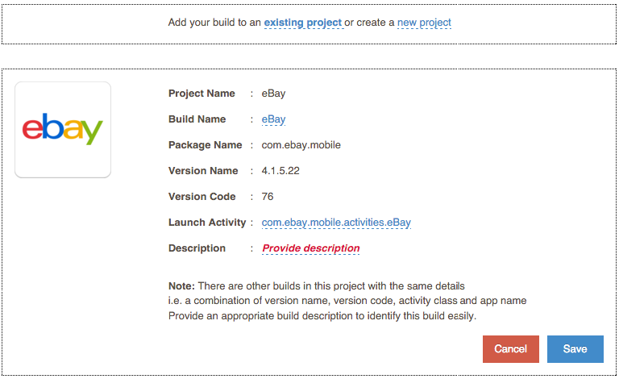

3. Create Project¶
Almost all activity that you do to test your mobile app will be part of a project. With RobusTest you can create a project to facilitate collaboration within the team and also to act as a logical place for all your builds, test cases, test suites, test runs and test reports.
The first step towards creating your project is, of course, to upload your app. This can be done by clicking on the Add New App button on the landing page. In case you wish to just try out RobusTest you can also use a sample app that we provide on the Upload Screen.
When you upload an app, you have the choice of adding to an existing project or to create a new project for your app. You should also provide a build description to uniquely identify your build from other builds in your project.
Apps that are part of a particular project can be accessed by everyone who is part of that project. Project members have the ability to test, automate and view reports for any build that is part of their project.
Once you have confirmed the project name and other details of your app, click on Save to add your app to RobusTest.
Once your app is uploaded to your project, you can access it by clicking on your project’s tile.
After selecting your project, select the appropriate build that you wish to test. You can select your build from the project details section by selecting either the app name, version name or version code of your app. Your build description helps you identify the right build.